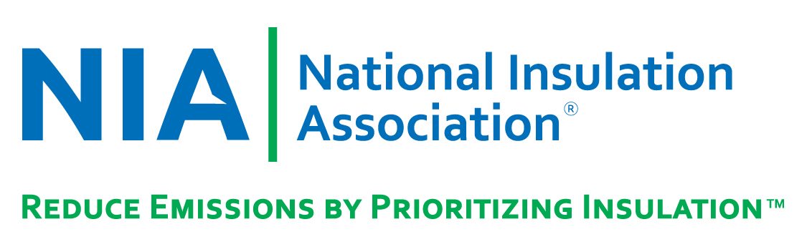

Contact Us
Feel free to get in touch with us!
Email: info@tarbage.com
Address: 123 Trash Lane, Garbage City
Did you know?
We Tarbage!
Tarbage has partnered with Ideal Insulation and Roofing to offer our product as one of their insulation options for customers to choose from. In addition, we have joined forces with the National Insulation Association (NIA), a not-for-profit trade association that provides us with insulation accessories and components for our market. NAIMA Canada is another one of our partners that shares our vision to enhance environmental sustainability through the use of insulation. They encourage the safe production and installation of insulation materials, and support improved comfort for occupants throughout the lifetime of a home or building. NAIMA has also provided our employees with free professional training. Furthermore, we have a team of 230 volunteers who have signed up to help bring garbage to our collection facilities, which will further enrich our business.
Feel free to get in touch with us!
Email: info@tarbage.com
Address: 123 Trash Lane, Garbage City